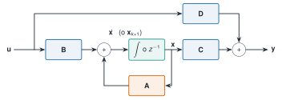
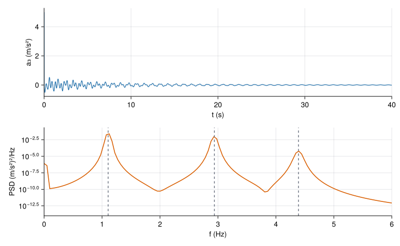

La ecuación del movimiento de una estructura es de segundo orden: relaciona desplazamientos, velocidades y aceleraciones. La representación en espacio de estados la reescribe como un sistema de primer orden en un vector que reúne todo lo que hace falta para predecir el futuro: el estado. Es el idioma común de la identificación (ERA, SSI), del filtrado de Kalman y de la simulación numérica, y permite hacer con una sola fórmula tres cosas que parecen distintas: simular, preguntar qué se puede medir, y pasar de tiempo continuo a datos muestreados.
NotaCómo se lee esta página
Tiempo orientativo: unas 3 horas. Nivel: intermedio. Tres capas: intuición (diagrama de bloques y simulación), fundamento (definiciones, observabilidad y discretización exacta) y aplicación (el edificio de tres plantas, caso transversal, cuyos datos sintéticos se generan exactamente con la discretización de esta página).
Objetivos y prerrequisitos
Objetivos. Al terminar esta página sabrás:
escribir en espacio de estados un sistema de segundo orden de varios grados de libertad, con salidas de desplazamiento, velocidad o aceleración;
pasar del espacio de estados a la función de transferencia \(\mathbf C(s\mathbf I-\mathbf A)^{-1}\mathbf B+\mathbf D\) y reconocer que la representación no es única;
construir las matrices de observabilidad y controlabilidad, interpretar su rango y explicar por qué un sensor en un nodo no ve ese modo;
discretizar con retenedor de orden cero, entender por qué es exacta, y por qué el método de Euler explícito puede inestabilizar una estructura;
simular la respuesta de un edificio con la recursión \(\mathbf x_{k+1}=\mathbf A_{\mathrm d}\mathbf x_k+\mathbf B_{\mathrm d}\mathbf u_k\).
Prerrequisitos.M2.2 y M2.4. Para ecuaciones diferenciales, J3.6.
Teoría breve
M2.6.1 De la ecuación de segundo orden a la de primer orden
Sea \(\mathbf M\ddot{\mathbf q}+\mathbf C\dot{\mathbf q}+\mathbf K\mathbf q=\mathbf B_2\mathbf u\), con \(\mathbf u\) las fuerzas aplicadas y \(\mathbf B_2\) la matriz que dice dónde. Si se toma como estado\(\mathbf x=\begin{bmatrix}\mathbf q\\\dot{\mathbf q}\end{bmatrix}\), resulta
La ecuación de salida dice qué se mide, \(\mathbf y=\mathbf C_{\mathrm s}\mathbf x+\mathbf D\mathbf u\). Para un sensor de desplazamiento, \(\mathbf C_{\mathrm s}=[\mathbf L_{\mathrm d}\;\mathbf 0]\); de velocidad, \([\mathbf 0\;\mathbf L_{\mathrm v}]\); y de aceleración (el acelerómetro, el sensor habitual en monitorización), como \(\ddot{\mathbf q}=-\mathbf M^{-1}\mathbf K\mathbf q-\mathbf M^{-1}\mathbf C\dot{\mathbf q}+\mathbf M^{-1}\mathbf B_2\mathbf u\),
Con acelerómetros aparece una transmisión directa\(\mathbf D\neq\mathbf 0\): la aceleración medida depende de la fuerza en el mismo instante. Los programas de identificación de salida solamente (sin conocer la fuerza) usan el modelo sin entrada medida y no necesitan \(\mathbf D\).

Figura 1: Diagrama de bloques del sistema en espacio de estados. El mismo diagrama vale en tiempo continuo (integrador) y discreto (retardo \(z^{-1}\)).
Definición 1Sistema lineal e invariante en espacio de estados. Es el cuarteto \((\mathbf A,\mathbf B,\mathbf C,\mathbf D)\) de \(\dot{\mathbf x}=\mathbf A\mathbf x+\mathbf B\mathbf u\), \(\mathbf y=\mathbf C\mathbf x+\mathbf D\mathbf u\). Su función de transferencia es \(\mathbf H(s)=\mathbf C(s\mathbf I-\mathbf A)^{-1}\mathbf B+\mathbf D\).
La representación no es única: el cambio de coordenadas \(\mathbf x=\mathbf T\mathbf x'\) con \(\mathbf T\) invertible da \((\mathbf T^{-1}\mathbf A\mathbf T,\;\mathbf T^{-1}\mathbf B,\;\mathbf C\mathbf T,\;\mathbf D)\), con la misma\(\mathbf H(s)\) y los mismos valores propios. Lo que identifica un experimento no es \(\mathbf A\) sino su clase de equivalencia: por eso los algoritmos de identificación (M2.1.5, ERA) devuelven una \(\widehat{\mathbf A}\) cuyos valores propios tienen sentido físico y cuyos elementos no.
La función de transferencia de la aceleración de la cubierta calculada por el espacio de estados coincide con \(-\omega^2\,H_{33}(\mathrm j\omega)\) de M2.4 hasta el redondeo (error relativo 7e-16).
M2.6.2 Controlabilidad y observabilidad
Definición 2Observabilidad. El par \((\mathbf A,\mathbf C)\) es observable si el estado inicial se puede reconstruir a partir de la salida durante un tiempo finito; equivale a que la matriz de observabilidad\(\mathcal O=\begin{bmatrix}\mathbf C\\\mathbf C\mathbf A\\\vdots\\\mathbf C\mathbf A^{n-1}\end{bmatrix}\) tenga rango \(n\). Controlabilidad es la propiedad dual: el par \((\mathbf A,\mathbf B)\) es controlable si \(\mathcal C=[\mathbf B\;\mathbf A\mathbf B\;\cdots\;\mathbf A^{n-1}\mathbf B]\) tiene rango \(n\).
En términos modales hay una versión más útil (el criterio de Popov–Belevitch–Hautus): el modo asociado al valor propio \(\lambda\) con vector propio \(\mathbf v\) es observable si \(\mathbf C\mathbf v\neq\mathbf 0\), y controlable si \(\mathbf w^{\mathsf H}\mathbf B\neq\mathbf 0\) para el vector propio por la izquierda \(\mathbf w\). Para un sistema no amortiguado con un sensor de desplazamiento, \(\mathbf C\mathbf v\propto\mathbf L_{\mathrm d}\boldsymbol\varphi\): un sensor colocado en un nodo del modo (donde la forma vale cero) no lo ve. Y la visibilidad es una cuestión de grado, no de sí o no: un modo con \(\lvert\varphi_{ik}\rvert\) pequeño es observable en teoría pero queda enterrado en el ruido en la práctica.
Tabla 1: Visibilidad de cada modo del edificio de tres plantas desde un sensor de desplazamiento en cada planta: valor absoluto de la forma modal normalizada a masa unidad, multiplicado por \(\sqrt{m}\) para que sea adimensional.
Modo
planta 1
planta 2
planta 3
1
0,317
0,573
0,755
2
0,671
0,427
0,606
3
0,670
0,699
0,249
En el edificio de cortante ningún modo tiene nodo en una planta, por lo que cualquier planta ve los tres modos; pero la cubierta ve el tercero (\(0{,}25\)) con menos de la mitad de la intensidad que la planta 2 (\(0{,}70\)). Un sensor único en la cubierta basta para identificar las tres frecuencias, aunque estimará peor la del tercer modo.
El rango numérico de \(\mathcal O\) no es fiable por sí solo. Con el sensor de desplazamiento en la cubierta, \(\mathcal O\) es \(6\times6\) de rango 6, pero su número de condición es 5.5e+05: las filas sucesivas \(\mathbf C\mathbf A^k\) crecen como \(\omega^k\) y los valores singulares abarcan seis órdenes de magnitud. Por eso, en el cálculo, el rango de \(\mathcal O\) depende de la tolerancia y de la escala de las variables de estado; para decidir qué modos se ven es mejor el criterio modal.
Ver el código
# cadena de tres masas entre dos paredes: el modo antisimétrico tiene un nodo en la masa centralKc = [2.0-10; -12-1; 0-12]Ac = [zeros(3, 3) I(3); -Kc zeros(3, 3)](rango_sensor_central =rank(matriz_observabilidad(Ac, [0.01.00.00.00.00.0])), rango_sensor_extremo =rank(matriz_observabilidad(Ac, [1.00.00.00.00.00.0])))
En la cadena simétrica entre paredes del apartado M2.1.7, el sensor central da rango 4 de 6: no puede ver el modo antisimétrico, que tiene un nodo en el centro, y por tanto tampoco su par de polos (una pareja de valores propios = una dimensión de dos estados cada una). Ese es el principal motivo para repartir los sensores y no ponerlos en puntos de simetría.
AdvertenciaObservable en teoría, invisible en la práctica
Cuando la forma modal es pequeña, el polo está en la función de transferencia, pero con un residuo diminuto: sale como una resonancia que se confunde con ruido. Por eso en la identificación real interesa más la relación señal–ruido de cada modo en cada sensor que el rango de \(\mathcal O\). Y si el ruido de medida es grande, observabilidad teórica no garantiza identificación.
M2.6.3 Discretización exacta
Un sensor da muestras cada \(\Delta t\). Si la entrada es constante entre muestras (retenedor de orden cero, ZOH), la solución exacta de \(\dot{\mathbf x}=\mathbf A\mathbf x+\mathbf B\mathbf u\) es
Es exacta: no es una aproximación de orden \(\Delta t\) ni de ningún otro. Y los valores propios cumplen \(z_k=e^{s_k\Delta t}\) (se desarrolla en la transformada Z), con lo que el módulo \(\lvert z_k\rvert=e^{-\zeta_k\omega_k\Delta t}\) conserva el decaimiento exacto.
Una forma práctica de calcular \(\mathbf A_{\mathrm d}\) y \(\mathbf B_{\mathrm d}\) juntas, también si \(\mathbf A\) es singular, es la exponencial de una matriz ampliada: \(\exp\!\left(\begin{bmatrix}\mathbf A&\mathbf B\\\mathbf 0&\mathbf 0\end{bmatrix}\Delta t\right)=\begin{bmatrix}\mathbf A_{\mathrm d}&\mathbf B_{\mathrm d}\\\mathbf 0&\mathbf I\end{bmatrix}\). Es lo que hace discretizar_zoh de Resonancia.
Las alternativas simples no conservan la estabilidad:
Euler explícito, \(\mathbf A_{\mathrm d}\approx\mathbf I+\mathbf A\Delta t\), da \(z=1+s\Delta t\). Para un oscilador poco amortiguado, \(\lvert z\rvert=\sqrt{(1-\zeta\omega\Delta t)^2+(\omega_{\mathrm d}\Delta t)^2}>1\): siempre inestable, por pequeño que sea \(\Delta t\) (crece como \(e^{\omega^2\Delta t\,t/2}\)).
Tustin (regla del trapecio), \(\mathbf A_{\mathrm d}=(\mathbf I-\tfrac{\Delta t}{2}\mathbf A)^{-1}(\mathbf I+\tfrac{\Delta t}{2}\mathbf A)\), conserva la estabilidad (un polo en el semiplano izquierdo va dentro del círculo unidad) pero distorsiona las frecuencias.
Ver el código
rad(Ad) =maximum(abs.(eigvals(Ad)))filas =String[]for dt in (0.01, 0.1) Ad, _ =discretizar_zoh(A3, B3, dt) Ae = I + A3 * dt Tu = (I - A3 * dt /2) \ (I + A3 * dt /2)push!(filas, "| $(coma(dt; d=2)) | $(coma(rad(Ad); d=5)) | $(coma(rad(Ae); d=3)) | $(coma(rad(Tu); d=5)) |")endMarkdown.parse("| Δt (s) | exacta (ZOH) | Euler explícito | Tustin |\n|--:|--:|--:|--:|\n"*join(filas, "\n"))
Tabla 2: Radio espectral (mayor módulo de los polos discretos) del edificio de tres plantas con tres discretizaciones. Un valor superior a 1 indica un sistema discreto inestable. El valor exacto es \(e^{-\zeta_1\omega_1\Delta t}\).
Δt (s)
exacta (ZOH)
Euler explícito
Tustin
0,01
0,99931
1,034
0,99931
0,10
0,99308
2,922
0,99382
Con \(\Delta t=0{,}01\) s (100 Hz, la frecuencia de muestreo de los datos sintéticos) Euler da un radio espectral \(1{,}034\): la simulación explota exponencialmente aunque el paso sea cien veces menor que el periodo del tercer modo. Con \(\Delta t=0{,}1\) s, el radio es \(2{,}92\). La discretización exacta, en cambio, da \(0{,}99931\) (el modo más lento, \(e^{-\zeta_1\omega_1\Delta t}\)).
M2.6.4 Simulación de la respuesta
Con \(\mathbf A_{\mathrm d}\) y \(\mathbf B_{\mathrm d}\) la simulación es una recursión. Para una excitación ambiental de fuerzas independientes, de ruido blanco, el edificio produce un registro cuya densidad espectral muestra las tres frecuencias naturales. Es exactamente el procedimiento con que se han generado los datos de datos/sinteticos/edificio-3-plantas/ (véase scripts/m02/generar_edificio.jl).
Ver el código
dt =0.01Ad, Bd =discretizar_zoh(A3, B3, dt)N =4096x =zeros(6)a =zeros(N)Minv =inv(M3)for k in1:N u = k ==1 ? 1.0e4/ dt :0.0# impulso de 10⁴ N·s aplicado en el primer paso acc = Minv * ([0.0, 0.0, u] - C3 * x[4:6] - K3 * x[1:3]) a[k] = acc[3] x = Ad * x + Bd * [u]endfr, P =psd_welch(a, 1/ dt; nseg=2048)fig =Figure(size=(780, 480))ax1 =Axis(fig[1, 1]; xlabel="t (s)", ylabel="a₃ (m/s²)", limits=(0, 40, nothing, nothing))lines!(ax1, (0:N-1) .* dt, a; color=AZUL, linewidth=1.2)ax2 =Axis(fig[2, 1]; xlabel="f (Hz)", ylabel="PSD (m/s²)²/Hz", yscale=log10, limits=(0, 6, 1e-14, nothing))lines!(ax2, fr, P; color=NARANJA, linewidth=1.6)vlines!(ax2, f3; color=GRIS, linestyle=:dash)fig

Figura 2: Respuesta libre del edificio de tres plantas a un impulso en la cubierta, calculada con la discretización exacta a 100 Hz. Arriba, aceleración de la cubierta; abajo, su densidad espectral de potencia: los tres picos están en las frecuencias naturales.
Simulación 1. Visibilidad de los modos. Elige la estructura y los sensores (uno o varios) y la magnitud medida. Se muestra la visibilidad de cada modo, es decir, el tamaño de \(\mathbf C\boldsymbol\varphi_k\), y el rango de la matriz de observabilidad \(\mathcal O\) construida con el método de potencias de \(\mathbf A\).
Ver el código
viewof estructura = Inputs.radio(["Edificio de cortante (3 plantas)","Cadena simétrica entre paredes (3 masas)"], {value:"Cadena simétrica entre paredes (3 masas)",label:"Estructura"})viewof sensores = Inputs.checkbox([1,2,3], {value: [2],label:"Sensores en las masas / plantas",format: i =>"masa "+ i})viewof magnitud = Inputs.radio(["desplazamiento","velocidad","aceleración"], {value:"desplazamiento",label:"Magnitud medida"})
Ver el código
obs = {const edificio = estructura.startsWith("Edificio");const e = edificio ?edificioCortante([2e5,2e5,2e5], [5e7,5e7,4e7]): {M: [[1,0,0], [0,1,0], [0,0,1]],K: [[2,-1,0], [-1,2,-1], [0,-1,2]]};const mod = {...e,...modosPropios(e.K, e.M)};const n =3, m = e.M[0][0];const w0 =2*Math.PI* mod.f[0];// tiempo normalizado τ = ω₁ t y estado [q; q'/ω₁]: A = [[0, I], [-M⁻¹K/ω₁², 0]]const Kn = e.K.map((f) => f.map((v) => v / (m * w0 * w0)));const A = [...Array(2* n)].map((_, i) => [...Array(2* n)].map((_, j) => i < n ? (j === i + n ?1:0) : (j < n ?-Kn[i - n][j] :0)));const filaC = (s) => {const fila =newArray(2* n).fill(0);if (magnitud ==="desplazamiento") fila[s] =1;elseif (magnitud ==="velocidad") fila[n + s] =1;elsefor (let j =0; j < n; j++) fila[j] =-Kn[s][j];// aceleración = -M⁻¹K q (sin amortiguamiento)return fila; };const C = sensores.map((s) =>filaC(s -1));let O = [], P = C;for (let k =0; k <2* n && C.length>0; k++) { O = O.concat(P); P =matMul(P, A); }const r = C.length?rango(O,1e-9*Math.max(...O.flat().map(Math.abs))) :0;// visibilidad modal: tamaño de C φ_k con los modos normalizados a masa unidad, adimensionalizado con √mconst vis = [0,1,2].map((k) =>Math.sqrt(sensores.reduce((s, i) => s + (mod.Phi[i -1][k] *Math.sqrt(m)) **2,0)));return {mod, r, vis, n};}
Ver el código
{const fmt = (x) => x.toFixed(3).replace(".",",");const filas = obs.vis.map((v, k) =>`<tr><td>Modo ${k +1}</td><td>${fmt(obs.mod.f[k])} Hz</td><td>${fmt(v)}</td><td>${v <1e-6?"<b>no se ve</b>": v <0.3?"se ve poco":"se ve"}</td></tr>`).join("");returnhtml`<table class="table" style="max-width:560px"><thead><tr><th>Modo</th><th>f</th><th>visibilidad ‖Cφ‖</th><th></th></tr></thead><tbody>${filas}</tbody></table> <p><b>Rango de la matriz de observabilidad:</b> ${obs.r} de ${2* obs.n}. ${obs.r<2* obs.n?"El sistema <b>no es observable</b>: hay modos que ningún dato de estos sensores puede revelar.":"El sistema es observable con estos sensores."}</p>`;}
Hipótesis y límites de la simulación 1
Modelo: sin amortiguamiento; la visibilidad \(\lVert\mathbf C\boldsymbol\varphi_k\rVert\) se calcula con los modos normalizados a masa unidad (en el edificio, el valor está multiplicado por \(\sqrt m\) para que sea adimensional).
Rango: se calcula por SVD con una tolerancia relativa de \(10^{-9}\) sobre una matriz \(\mathcal O\) cuyos estados están escalados por la frecuencia fundamental; con otra escala o tolerancia, el rango numérico puede cambiar (véase el aviso de la teoría).
Con aceleración el rango no cambia respecto del desplazamiento (en el modelo sin amortiguamiento, \(\mathbf C\) de aceleración es una combinación de la de desplazamiento).
Qué no se puede concluir: que con sensores en puntos «no nodales» baste para identificar. La visibilidad pequeña, el ruido y la resolución espectral pueden impedir ver el modo.
Para explorar. (1) Con la cadena simétrica, un sensor en la masa 2 (centro): rango 4. Añade un sensor en la masa 1: rango 6. (2) Pasa al edificio de cortante: con un solo sensor, en cualquier planta, el rango es 6. (3) Mira la visibilidad del tercer modo con el sensor solo en la cubierta.
Práctica guiada
NotaPráctica guiada
Obtén \((\mathbf A,\mathbf B)\) del edificio con espacio_estados y comprueba que los valores propios de \(\mathbf A\) dan las frecuencias y los amortiguamientos de polos_modales.
Construye la salida de aceleración de la cubierta (\(\mathbf C_{\mathrm s}\) y \(\mathbf D\) de la ecuación 2) y compara \(\mathbf C(\mathrm j\omega\mathbf I-\mathbf A)^{-1}\mathbf B+\mathbf D\) con \(-\omega^2H_{33}\).
Discretiza con discretizar_zoh a 100 Hz y comprueba que los polos discretos son \(e^{s\Delta t}\).
Calcula el radio espectral con Euler y con la discretización exacta.
usingResonancia, LinearAlgebraM, C, K =edificio_tres_plantas()A, B =espacio_estados(M, C, K, [0.0, 0.0, 1.0])f, zeta =polos_modales(A)Ad, Bd =discretizar_zoh(A, B, 0.01)z =eigvals(Ad)maximum(abs.(z)), maximum(abs.(eigvals(I +0.01* A))) # exacta frente a Euler
import numpy as npfrom scipy import linalgimport matrices as mx # mse/m02-matematicas/python/matrices.py (probado con pytest)M, C, K = mx.edificio_tres_plantas("A", amortiguado=True)A, B = mx.espacio_estados(M, C, K, [[0.0], [0.0], [1.0]])f, zeta = mx.polos_modales(A)Ad, Bd = mx.discretizar_zoh(A, B, 0.01)np.abs(np.linalg.eigvals(Ad)).max(), np.abs(np.linalg.eigvals(np.eye(6) +0.01* A)).max()
El código Python no se ejecuta en la web: espacio_estados, polos_modales y discretizar_zoh están probadas con pytest frente a Julia en python/matrices.py.
«Pídeselo a Claude»
TipPrompt
«Con Julia y el paquete Resonancia: toma el edificio de tres plantas (edificio_tres_plantas), escríbelo en espacio de estados con espacio_estados, discretízalo a 100 Hz con discretizar_zoh, simula 60 s de respuesta a ruido blanco en las tres plantas con semilla fija, y compara la PSD de la aceleración de la cubierta con las frecuencias de modos_propios. Después compara con Euler explícito y dime qué pasa.»
Verifica. (a) Que usa discretizar_zoh, no un Euler escrito a mano. (b) Que el radio espectral de la discretización exacta es menor que 1 y el de Euler, mayor que 1. (c) Que las frecuencias de los picos de la PSD coinciden con modos_propios dentro de la resolución espectral. (d) Que la semilla es fija y se informa. (e) Que no concluye «Euler es válido» si no ha mirado el radio espectral.
Ejercicios
El método de Euler explícito conserva la estabilidad de un oscilador amortiguado si el paso de tiempo es suficientemente pequeño.
Falso para sistemas poco amortiguados: \(\lvert z\rvert=\lvert1+s\Delta t\rvert>1\) siempre para un oscilador con amortiguamiento ligero (el crecimiento es lento si \(\Delta t\) es pequeño, pero existe). Solo es estable con amortiguamiento grande y paso pequeño; para estructuras, no es una buena opción.
Una cadena de tres masas iguales unidas entre dos paredes por cuatro muelles iguales se mide con un único sensor de desplazamiento en la masa central. ¿Cuál es el rango de la matriz de observabilidad del sistema de seis estados?
4. El modo antisimétrico tiene un nodo en la masa central, y su par de polos (\(2\) estados) no es observable.
Un oscilador de \(\omega_n=2\) rad/s y \(\zeta=0{,}1\) se discretiza con ZOH y \(\Delta t=0{,}05\) s. ¿Cuánto vale el módulo de sus polos discretos?
\(\mathbf C=[\mathbf I\;\mathbf 0]\) y \(\mathbf D=\mathbf M\).
La b: la aceleración es \(\ddot{\mathbf q}=-\mathbf M^{-1}\mathbf K\mathbf q-\mathbf M^{-1}\mathbf C_{\mathrm a}\dot{\mathbf q}+\mathbf M^{-1}\mathbf B_2\mathbf u\) (ecuación 2), que depende de la fuerza instantánea: transmisión directa.
Debes instrumentar una pasarela simétrica de tres vanos con tres acelerómetros. ¿Dónde no pondrías los sensores y por qué? ¿Qué ocurriría con los modos antisimétricos?
Digo que un sensor en un punto de simetría no ve los modos antisimétricos, que tienen un nodo allí.
Relaciono con la observabilidad: ese modo no aparece en la salida y sus polos no se pueden identificar con esos sensores.
Propongo repartir los sensores o desplazarlos de los ejes de simetría, y comprobar la visibilidad modal con un modelo previo.
En el punto central, los modos antisimétricos tienen un nodo y un sensor allí no los ve (residuo nulo): sus polos no aparecen en los datos. Conviene colocar los sensores fuera de los ejes de simetría y comprobar con un modelo la visibilidad de cada modo de interés.
La doy por superada si…
Qué no dice esta página
No se estudian las matrices de Gram de controlabilidad y observabilidad ni la reducción balanceada.
Con amortiguamiento no proporcional los modos de \(\mathbf A\) son complejos; aquí solo se usa el caso proporcional para la interpretación modal.
No se trata el estado estocástico (ruido de proceso y de medida) ni el filtro de Kalman; son la base de la identificación con SSI, que se desarrolla en M7.
La simulación es lineal: no incluye no linealidades ni variación de la rigidez con la amplitud.